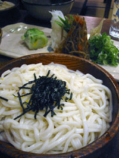
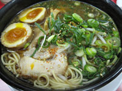
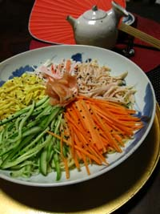
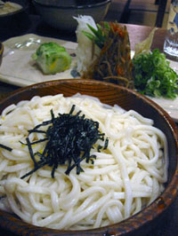
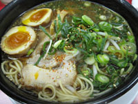
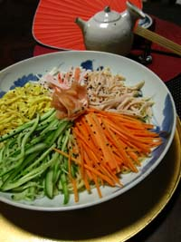

Japanese Soup Recipes
Japanese Noodle Recipes
Noodles are much loved throughout Japan, where they are considered more of a snack instead of a meal. Noodle joints are placed on almost every street corner, and ramen carts and street stalls, a throwback to the old days, can still be found near busy train stations. For more information on the different types of noodles you see here, visit the noodle page of the ingredients section.
Soba
Soba is made of buckwheat flour, and can be eaten hot, in soup, or cold, with dipping sauce, which is called Zaru Soba.RECIPE
For hot soba, prepare the soup stock separately from the noodles, and serve hot. The variations are the same as for the cold soba (except for the walnuts). In Japan, it is also common to find sansai (mountain vegetables) nishin (simmered herring) and tsukimi (plain raw egg). A sprinkling of shichimi togarashi (seven spice powder) is available on the table.RECIPE
Tempura soba is also a nice and filling treat. For hot soba, a single tempura shrimp is laid on top of the soba. With cold soba, it is called ten-zaru, and includes shrimp and vegetables, which are served hot and eaten alongside the soba with the same dipping sauce. As I rarely make tempura at home, I like ordering this when I’m out.
Udon
While dried udon noodles are readily available in the West, I prefer the soft, yet chewy texture of frozen udon. This is really handy, especially when adding to nabe (hot pot dishes), as they are already fully cooked and don’t have to be simmered in separate water. Therefore, that can be added directly to whatever simmering broth you are using. Contrary to their appearance, the thick white noodles stand up well to simmering, and don’t get overly soft very quickly. Nabeyaki udon is a popular menu item at Japanese restaurants in the West, and consists of an individual nabe (ceramic or iron heat-proof vessel) filled with udon, tofu, kamaboko, chicken and vegetables such as hakusai (Chinese cabbage) and green onions.
The fixings for hot and cold udon are the same as for soba, but kitsune (fox) udon is the most popular kind. This consists of a single square of fried and simmered tofu on top of a bowl of hot udon. Tsukimi (moon viewing) udon is my personal favorite. I prefer my egg almost raw, so I add it at the very last minute. The heat gently “cooks” the outside of the white, leaving the center raw, but warm. As with soba, I like sprinkling the udon with a hefty amount of shichimi togarashi as well. RECIPE
Ramen
Ramen noodles originally came from China, and have become a beloved fast food for many, and a cheap junk food for poor students around the world. The packaged variety available in the West bears little resemblance to the real thing, and the dry soup stock is loaded with sodium and chemicals. Ramen is also referred to as chuka-soba (Chinese soba) and is made with wheat, water and eggs. There are several brands of packaged ramen noodles of decent quality, including Myojo Chukazanmai, that are available at Japanese and Asian markets. These cost up to 4 times as much as the cheap kind, but have added packages of real sesame oil, miso or soy sauce that are much more flavorful. The noodles are of better quality as well.RECIPE
Visiting a Ramen Shop
There are so many variations of ramen that the possibilities are endless. Japan features various regional styles of ramen, often with freshly made noodles and rich soup stock made of pork, chicken or a combination of the two. This is available in various styles:
Shio: Salt, which is the classic way to go, as well as the best way if the soup stock is of a high quality.
Shoyu: With added soy sauce, for those who prefer the taste and dark color.
Miso: Miso paste is added to make a wonderfully thick, rich and salty soup. This is sometimes spicy as well.
Butter: A small pad of butter is added at the end. I know it sounds strange, but it’s actually pretty good!
Reimen or Hiyashi Chuka: In the hot season, cold ramen is served topped with a mound of fresh raw vegetables, thinly shredded omelet and either ham, chicken, or shrimp. This is covered with a vinegary, sweet soy & sesame sauce that is delicious. The result is somewhat like a noodle salad. You can also make this easily at home.RECIPE
Toppings: Chopped green onions are standard, and some people like ordering extra (oomori). Chashu is pork which is cooked in tea and seasonings, and then thinly sliced. Again, you can order extra slices if you wish. A piece of nori is often laid on top, along with a few pieces of shinagiku; a sweet simmered spongy vegetable.
Sizes: You can usually also ask for oomori (large) regular (chu) or small (sho)
Seasonings: A variety of seasonings is also on the table and added to taste, including shoyu, la-yu (spicy sesame oil), vinegar and white pepper.
Accompaniments: As if a huge bowl of ramen isn’t filling enough, (and it seems it is not, for the ravenous stick thin teens and young students who frequent ramen shops), side dishes are also available. You would think ramen would be served with something healthy to balance it, like a salad. Unfortunately, because of its Chinese roots, ramen is often served with yakimeshi (fried rice) or gyoza (potstickers).
Somen
I always equate these thin (thinner than angel hair pasta) white wheat noodles with summer. They are the perfect thing to eat when it's hot & humid and your appetite isn't great. Elegant and refined, somen noodles were the favorite of Japan's aristocracy. The photo at right is the creation of my husband. He was influenced by the linear wave patterns in Rimpa art. The glass bowl is in a shell shape, by a Japanese contemporary glass artist.RECIPE
 




